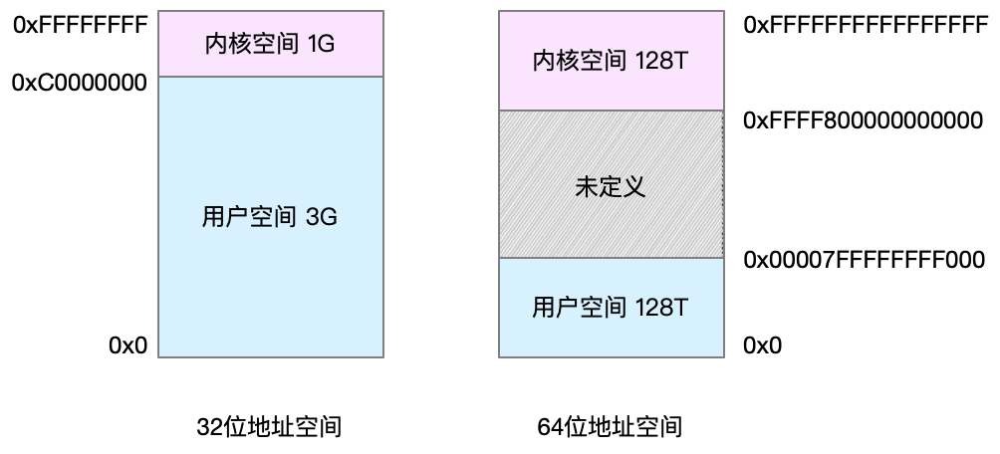
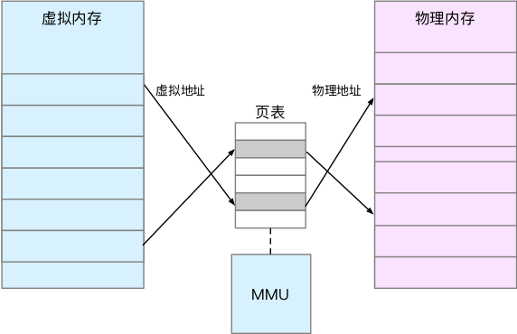
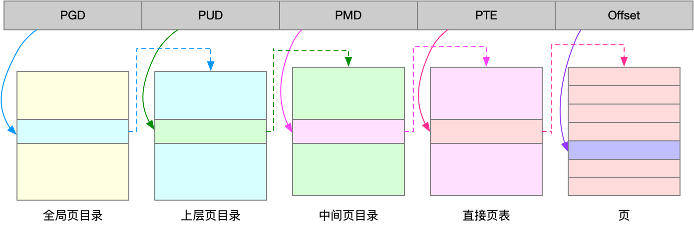
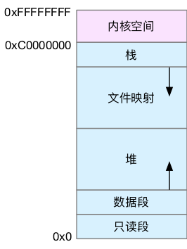

内存定义
内存主要用来存储系统和应用程序的指令、数据、缓存等。
内存映射
- 虚拟地址空间：是连续的，不同字长的处理器，地址空间范围不同
- 内核空间
- 用户空间

- 内存映射：就是将虚拟内存地址映射到物理内存地址

-
缺页异常：当进程访问的虚拟地址在页表中查不到时，系统会产生一个缺页异
-
页：一个内存映射的最小单位也就是页，通常是 4 KB 大小。这样，每一次内存映射，都需要关联 4 KB 或者 4KB 整数倍的内存空间。
-
多页分级和大页
- 页的大小只有 4 KB ，导致的另一个问题就是，整个页表会变得非常大。比方说，仅 32 位系统就需要 100 多万个页表项（4GB/4KB），才可以实现整个地址空间的映射。为了解决页表项过多的问题，Linux 提供了两种机制，也就是多级页表和大页（HugePage）。
- 多页分级
- 就是把内存分成区块来管理，将原来的映射关系改成区块索引和区块内的偏移。
- 由于虚拟内存空间通常只用了很少一部分，那么，多级页表就只保存这些使用中的区块，这样就可以大大地减少页表的项数。
- Linux 用的正是四级页表来管理内存页
- 大页
- 就是比普通页更大的内存块，常见的大小有 2MB 和 1GB。
- 大页通常用在使用大量内存的进程上，比如 Oracle、DPDK 等。

虚拟内存空间分布

- 只读段，包括代码和常量等。
- 数据段，包括全局变量等。
- 堆，包括动态分配的内存，从低地址开始向上增长。
- 文件映射段，包括动态库、共享内存等，从高地址开始向下增长。
- 栈，包括局部变量和函数调用的上下文等。栈的大小是固定的，一般是 8 MB。
内存分配与回收
linux使用伙伴系统来管理内存分配
发现内存紧张：
- 回收缓存
- 回收不常访问的内存
- 使用交换分区（swap）
- swap就是把其中一块磁盘当内存使用
- 换出：把进程暂时不用的数据存储到磁盘中
- 换入：当进程访问这些内存时，再从磁盘读取这些数据到内存中
- 由于磁盘读写的速度远比内存慢，Swap 会导致严重的内存性能问题。
- 杀死进程
- oom（out of memory）问题，内核的一种保护机制
- 一个进程消耗的内存越大，oom_score 就越大
- 一个进程运行占用的 CPU 越多，oom_score 就越小
- 进程的 oom_score 越大，代表消耗的内存越多，也就越容易被 OOM 杀死，从而可以更好保护系统
- oom_adj 的范围是 [-17, 15]，数值越大，表示进程越容易被 OOM 杀死；数值越小，表示进程越不容易被 OOM 杀死，其中 -17 表示禁止 OOM。
如何查看内存使用情况
- free
## 这两行分别是物理内存 Mem 和交换分区 Swap 的使用情况
zsy@ubuntu:~$ free
total used free shared buff/cache available
Mem: 2028784 953944 434752 1972 640088 911864
Swap: 2097148 0 2097148
- 第一列，total 是总内存大小；
- 第二列，used 是已使用内存的大小，包含了共享内存；
- 第三列，free 是未使用内存的大小；
- 第四列，shared 是共享内存的大小；
- 第五列，buff/cache 是缓存和缓冲区的大小；
- 最后一列，available 是新进程可用内存的大小。
小结
当进程通过 malloc() 申请内存后，内存并不会立即分配，而是在首次访问时，才通过缺页异常陷入内核中分配内存。
由于进程的虚拟地址空间比物理内存大很多，Linux 还提供了一系列的机制，应对内存不足的问题，比如缓存的回收、交换分区 Swap 以及 OOM 等。
了解系统或者进程的内存使用情况时，可以用 free 和 top 、ps 等性能工具。